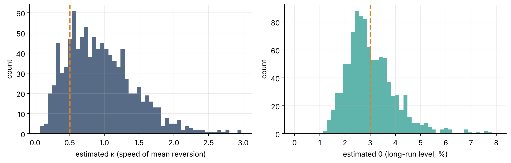
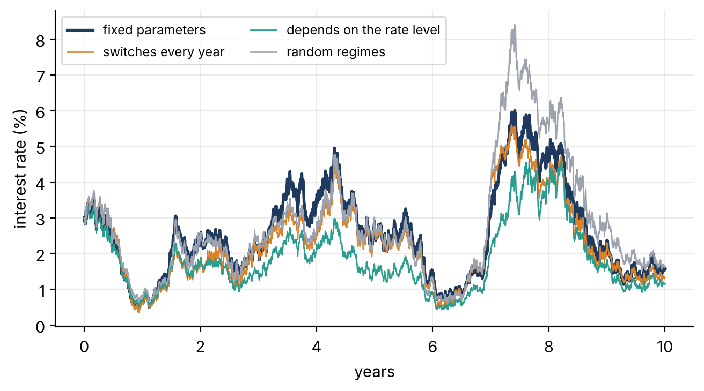
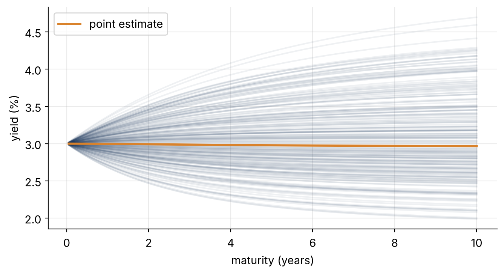
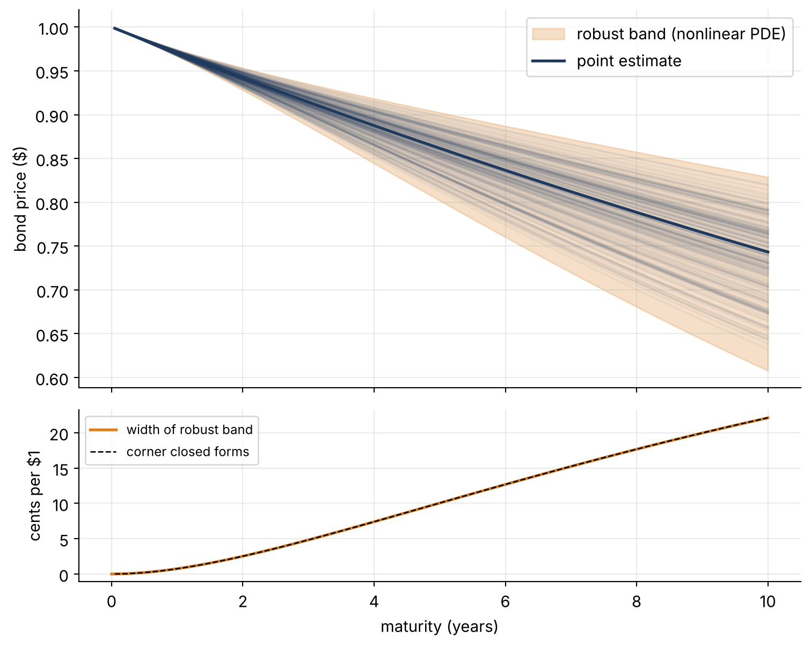

Part 2 · From one CIR model to a whole family: nonlinear affine processes
parameter uncertainty
nonlinear affine processes
bond pricing
Estimated parameters are uncertain. Instead of pretending otherwise, we price with every plausible parameter at once and get an honest interval of prices.
and treated \kappa (speed of pull), \theta (long-run level) and \sigma (noise) as known. In practice we estimate them from data. This post asks how much those estimates can be trusted, and what to do when they can’t.
Step 1 · Estimate the parameters, then do it again 1,000 times
Let’s play a game where we know the truth. We simulate 10 years of monthly interest rates from a CIR model with \kappa = 0.5, \theta = 3\%, \sigma = 0.09, then estimate the parameters from that data the way a practitioner would. Then we repeat with 1,000 fresh data sets.
The estimator divides the discretized model by \sqrt{r_t} so it becomes an ordinary linear regression:
def sim_cir(kappa, theta, sigma, r0, n, dt, sub=20): h = dt / sub; r = np.empty(n +1); r[0] = r0; x = r0for k inrange(n):for _ inrange(sub): xp =max(x, 0); x = x + kappa * (theta - xp) * h + sigma * np.sqrt(xp * h) * rng.standard_normal() r[k +1] =max(x, 1e-6)return rdef ols_cir(r, dt): y = (r[1:] - r[:-1]) / np.sqrt(r[:-1]) X = np.column_stack([dt / np.sqrt(r[:-1]), np.sqrt(r[:-1]) * dt]) b, *_ = np.linalg.lstsq(X, y, rcond=None) kappa =-b[1]; theta = b[0] / kappa sigma = np.std(y - X @ b, ddof=2) / np.sqrt(dt)return kappa, theta, sigmatrue =dict(kappa=0.5, theta=0.03, sigma=0.09)est = np.array([ols_cir(sim_cir(**true, r0=0.03, n=120, dt=1/12), 1/12) for _ inrange(1000)])ok = (est[:, 0] >0) & (est[:, 1] >0) & (est[:, 1] <0.2)est = est[ok]fig, axes = plt.subplots(1, 2, figsize=(11, 3.6))axes[0].hist(est[:, 0], bins=50, color=NAVY, alpha=.75); axes[0].axvline(true["kappa"], color=ORANGE, ls="--", lw=2)axes[0].set_xlabel("estimated κ (speed of mean reversion)")axes[1].hist(100* est[:, 1], bins=50, range=(0, 8), color=TEAL, alpha=.75); axes[1].axvline(100* true["theta"], color=ORANGE, ls="--", lw=2)axes[1].set_xlabel("estimated θ (long-run level, %)")for ax in axes: ax.set_ylabel("count")plt.tight_layout(); plt.show()q = np.percentile(est[:, 0], [5, 95])print(f"90% of κ-estimates lie between {q[0]:.2f} and {q[1]:.2f} (truth 0.50)")

Figure 1: Estimates of κ and θ from 1,000 independent 10-year monthly samples of the same CIR model. The dashed lines show the truth. Even with a decade of data, the middle 90% of κ-estimates span roughly a factor of six.
90% of κ-estimates lie between 0.30 and 1.86 (truth 0.50)
What to notice: the speed of mean reversion \kappa is notoriously hard to pin down, and its estimates are biased upward. The long-run level \theta is also very uncertain. This is not bad statistics; ten years is simply not that much information about a slow process.
Step 2 · Two ways to respond
Classical approach: take the point estimate, plug it in, and price. One number, but it hides the uncertainty from Step 1.
Robust approach: admit that the parameters lie somewhere in a range, and possibly even change over time inside that range. Write the CIR drift as b_0 + b_1 r (so b_0=\kappa\theta, b_1=-\kappa) and the squared noise as a = \sigma^2, and allow
b_0 \in [\underline b_0, \overline b_0], \qquad b_1 \in [\underline b_1, \overline b_1], \qquad a \in [\underline a, \overline a].
where the parameter paths b_0(t), b_1(t), a(t) are unknown and can be any (adapted) choice inside the box. This is a nonlinear affine process, the framework of Fadina, Neufeld & Schmidt (2019). It is not one model but a whole family of models, and we want answers that hold for all of them.
Show the code
lo =dict(b0=0.012, b1=-0.7, a=0.07**2); hi =dict(b0=0.018, b1=-0.3, a=0.11**2)T, n =10, 2400; dt = T / n; t = np.linspace(0, T, n +1); dW = rng.standard_normal(n) * np.sqrt(dt)def path(rule): r = np.empty(n +1); r[0] =0.03for k inrange(n): b0, b1, a = rule(k, r[k]); rp =max(r[k], 0) r[k +1] = r[k] + (b0 + b1 * rp) * dt + np.sqrt(a * rp) * dW[k]return100* np.maximum(r, 0)mid =lambda k, r: (0.015, -0.5, 0.09**2)switch_year =lambda k, r: (hi["b0"], hi["b1"], hi["a"]) if (k * dt) %2<1else (lo["b0"], lo["b1"], lo["a"])adversarial =lambda k, r: (hi["b0"], hi["b1"], hi["a"]) if r >0.03else (lo["b0"], lo["b1"], lo["a"])rand_reg = np.repeat(rng.integers(0, 2, n //120+1), 120)random_regime =lambda k, r: tuple((hi if rand_reg[k] else lo)[p] for p in ("b0", "b1", "a"))plt.plot(t, path(mid), color=NAVY, lw=2, label="fixed parameters")plt.plot(t, path(switch_year), color=ORANGE, lw=1, label="switches every year")plt.plot(t, path(adversarial), color=TEAL, lw=1, label="depends on the rate level")plt.plot(t, path(random_regime), color=GREY, lw=1, label="random regimes")plt.xlabel("years"); plt.ylabel("interest rate (%)"); plt.legend(fontsize=9, ncol=2); plt.show()

Figure 2: One fixed CIR model (navy) versus three members of the nonlinear CIR family, whose parameters switch within the uncertainty box over time (orange, teal, grey). All use the same random shocks.
NoteThe nonlinear Feller condition
In Part 1 we needed 2\kappa\theta \ge \sigma^2 to keep the rate positive. Now it must hold for every model in the family, and the worst case is the weakest pull with the strongest noise: 2\underline b_0 \ge \overline a. Here 2(0.012) = 0.024 \ge 0.0121, so it holds.
Step 3 · Price a bond for each fixed parameter
A zero-coupon bond pays $1 at time T. Its price today is the expected discount factor \mathbb E\big[e^{-\int_0^T r_s\,ds}\big]. CIR is an affine model, which means this price has a closed form:
P(T) = A(T)\, e^{-B(T)\, r_0},
with explicit A and B. That is the “affine” in “affine processes”: the log price is linear in the current rate. It is what makes these models so practical.
Show the code
def cir_bond(b0, b1, a, r0, tau): kappa =-b1; theta = b0 / kappa; g = np.sqrt(kappa**2+2* a) e = np.exp(g * tau) -1; den = (g + kappa) * e +2* g B =2* e / den; A = (2* g * np.exp((kappa + g) * tau /2) / den) ** (2* kappa * theta / a)return A * np.exp(-B * r0)tau = np.linspace(0.05, 10, 200); r0 =0.03for _ inrange(200): b0, b1, a = [rng.uniform(lo[p], hi[p]) for p in ("b0", "b1", "a")] plt.plot(tau, -100* np.log(cir_bond(b0, b1, a, r0, tau)) / tau, color=NAVY, alpha=.07)plt.plot(tau, -100* np.log(cir_bond(0.015, -0.5, 0.09**2, r0, tau)) / tau, color=ORANGE, lw=2.2, label="point estimate")plt.xlabel("maturity (years)"); plt.ylabel("yield (%)"); plt.legend(); plt.show()

Figure 3: Yield curves from the CIR closed form for 200 random fixed parameter choices inside the uncertainty box. Each curve is a perfectly reasonable model, and they disagree strongly at long maturities.
Step 4 · The robust price: best and worst case over the whole family
The robust upper price is the highest value any model in the family can produce, including models whose parameters change over time and react to the market:
\overline P(T) = \sup_{\text{parameter paths in the box}} \mathbb E\Big[e^{-\int_0^T r_s\,ds}\Big],
and the lower price \underline P(T) is the infimum. This is a nonlinear expectation. It is no longer linear in the payoff, which is where the name nonlinear affine process comes from.
How do we compute a supremum over infinitely many parameter paths? Dynamic programming turns it into a PDE in which, at every point, nature picks the worst parameters:
\partial_\tau u = \sup_{b_0,b_1}\,(b_0 + b_1 x)\,\partial_x u \;+\; \sup_{a}\, \tfrac12\, a\, x\, \partial_{xx} u \;-\; x\,u, \qquad u(0,x)=1 .
Each \sup is easy: it just picks an endpoint of the interval depending on the sign of \partial_x u or \partial_{xx} u. We solve it with finite differences.
Show the code
def robust_bond(lo, hi, T, upper=True, xmax=0.30, nx=151, dt=4e-4): x = np.linspace(0, xmax, nx); dx = x[1] - x[0]; u = np.ones(nx) out = [(0.0, u.copy())]; steps =int(T / dt)for k inrange(steps): ux_f = np.r_[(u[1:] - u[:-1]) / dx, 0]; ux_b = np.r_[0, (u[1:] - u[:-1]) / dx] uxx = np.zeros(nx); uxx[1:-1] = (u[2:] -2* u[1:-1] + u[:-2]) / dx**2 pick = (lambda s: s >0) if upper else (lambda s: s <0) ux_c = np.gradient(u, dx) b0 = np.where(pick(ux_c), hi["b0"], lo["b0"]); b1 = np.where(pick(x * ux_c), hi["b1"], lo["b1"]) a = np.where(pick(uxx), hi["a"], lo["a"]) drift = b0 + b1 * x ux = np.where(drift >0, ux_f, ux_b) # upwinding u = u + dt * (drift * ux +0.5* a * x * uxx - x * u) u[-1] =2* u[-2] - u[-3] # linear extrapolation at the far boundary out.append(((k +1) * dt, u.copy()))return x, outmats = np.linspace(0, 10, 41)x, up = robust_bond(lo, hi, 10, upper=True); _, dn = robust_bond(lo, hi, 10, upper=False)i0 = np.argmin(abs(x -0.03)); times = np.array([s for s, _ in up])U = np.array([up[np.argmin(abs(times - m))][1][i0] for m in mats]); L = np.array([dn[np.argmin(abs(times - m))][1][i0] for m in mats])fig, axes = plt.subplots(2, 1, figsize=(8, 6.4), sharex=True, gridspec_kw={"height_ratios": [2.2, 1]})axes[0].fill_between(mats, L, U, color=ORANGE, alpha=.25, label="robust band (nonlinear PDE)")for _ inrange(200): b0, b1, a = [rng.uniform(lo[p], hi[p]) for p in ("b0", "b1", "a")] axes[0].plot(tau, cir_bond(b0, b1, a, 0.03, tau), color=NAVY, alpha=.05)axes[0].plot(tau, cir_bond(0.015, -0.5, 0.09**2, 0.03, tau), color=NAVY, lw=2, label="point estimate")axes[0].set_ylabel("bond price ($)"); axes[0].legend()axes[1].plot(mats, 100* (U - L), color=ORANGE, lw=2, label="width of robust band")axes[1].plot(tau, 100* (cir_bond(lo["b0"], lo["b1"], hi["a"], .03, tau) - cir_bond(hi["b0"], hi["b1"], lo["a"], .03, tau)),"k--", lw=1, label="corner closed forms")axes[1].set_xlabel("maturity (years)"); axes[1].set_ylabel("cents per $1"); axes[1].legend(fontsize=9)plt.tight_layout(); plt.show()print(f"10-year bond: point estimate ${cir_bond(0.015,-0.5,0.09**2,.03,10):.4f}, robust range ${L[-1]:.4f} – ${U[-1]:.4f}")

Figure 4: Robust bond-price bounds from the nonlinear PDE (shaded band) with the 200 fixed-parameter prices inside it. Lower panel: the PDE solution coincides with the closed-form price at the extreme ‘corner’ parameters.
10-year bond: point estimate $0.7433, robust range $0.6077 – $0.8288
What to notice:
The robust band contains every fixed-parameter price, and it widens quickly with maturity. For a 10-year bond the band is about 22 cents per dollar of face value: pure model risk.
For a bond the worst case happens at a corner of the box (weakest drift and strongest noise for the upper price), so the PDE agrees with the closed form at those corners. That is because the bond price is monotone and convex in the rate.
For contracts whose payoff is not monotone or convex, nature’s worst choice switches from one corner to another depending on the state, and no single fixed parameter gives the right bound. That is exactly what we will see with currency options in Part 3.
Recap, step by step. Estimates are uncertain (Step 1) → replace one parameter by a box (Step 2) → affine models still price each fixed model in closed form (Step 3) → the robust price is a sup/inf over the family, computed from a nonlinear PDE (Step 4).
Next: the same idea applied to currency options, where the payoff shape makes the robust answer genuinely different from any single model.